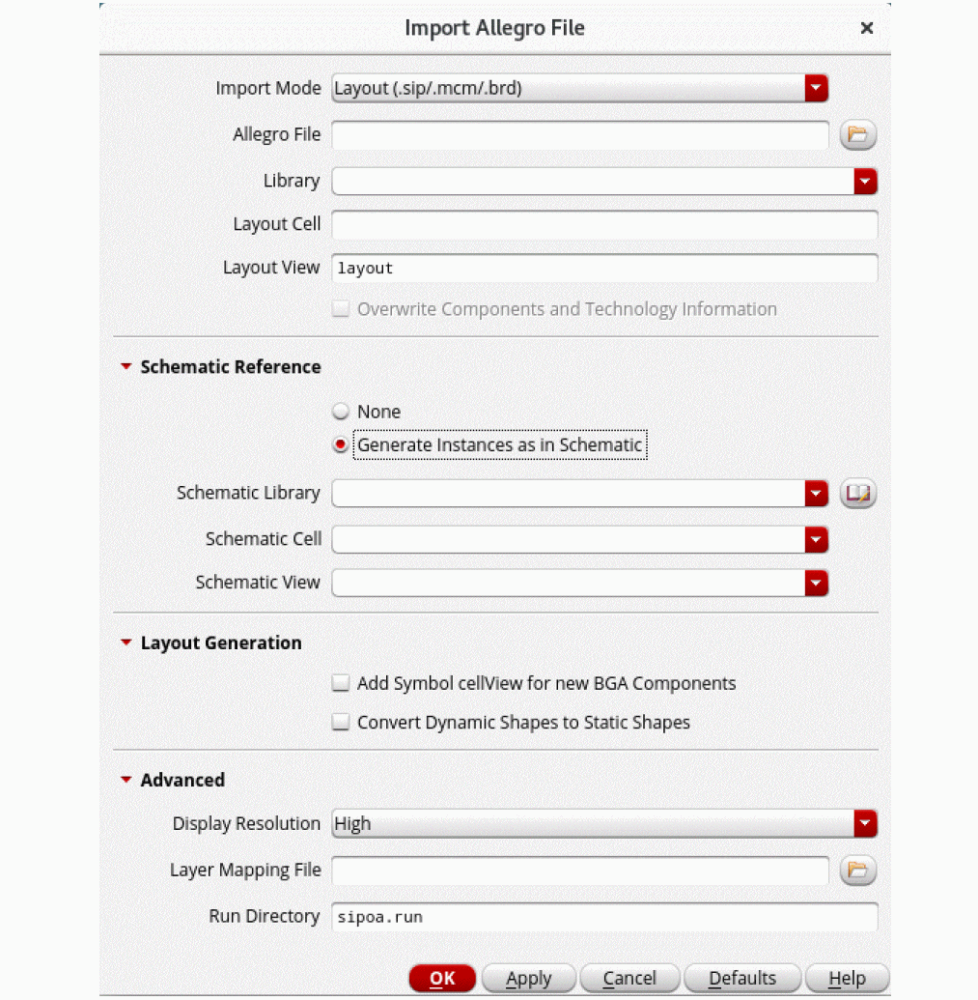

Importing the Package Layout
When importing the package layout, the Allegro translator can be run in two modes, non-incremental and incremental mode.
In the non-incremental mode, it imports a .sip file to the OA library that has been created or modified to ensure it has the same structure as created during the export.
While importing, the translator creates an OA library file from an input database created by one of the SPB layout design tools. It translates the data in two steps:
- Open the design in the SPB tool and write its content (in incremental mode) to an intermediate file.
- Read the intermediate file in Virtuoso and create the OA data from its content (in incremental mode).
You can import a .sip, .mcm,.brd, or a catalog of .dra files. During import, the translators create a layer stack up and constraints in techdb and TILPs for SMDs or dies.
When you translate the data from SiP into Virtuoso, the relevant file is created by a package designer. It contains the BGA cell, the vias to be used for package routing, and the technology file used in SIP. This technology file is compiled into the Virtuoso tech.db that is in the package library. The package technology file is not the same as the IC technology file. In contrast, Edit-in-Concert in the Virtuoso RF Solution lets you seamlessly switch between the different technology files. You can also import the locations of IO pads on a die. This information is stored in a bump location file, which can be used later to create and align IO pads in an adjacent die.
To import the SiP file to Virtuoso, which contains the BGA and package techfile:
-
Click CIW – File – Import – From Allegro…
The Import Allegro File form opens.
 - Specify Import Mode, Allegro File, and Library. The Layout Cell and Layout View fields get populated automatically.
- Select Add Symbol cellview for new BGA Components.
- Click OK.
- Check Library Manager to ensure that the new cells have been added appropriately.
When importing a layout from the Allegro platform to Virtuoso Studio, the ratio of DataBase Unit Per User Unit remains 1:1. This means that the resolution of a layout remains same during the import.
Related Topic
Return to top